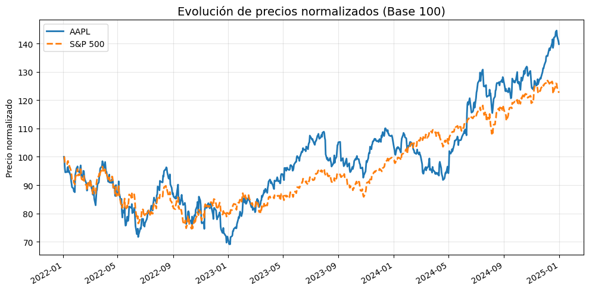
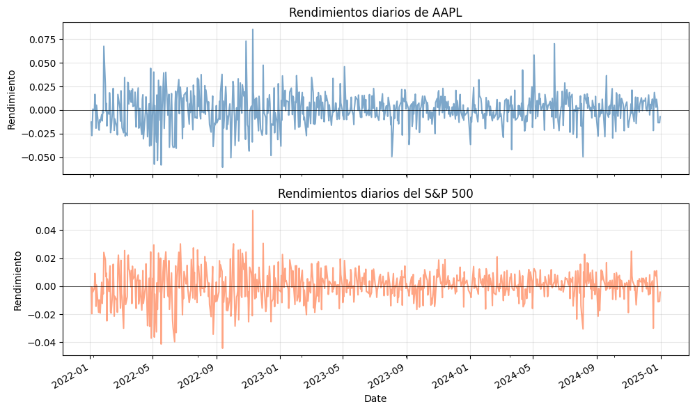
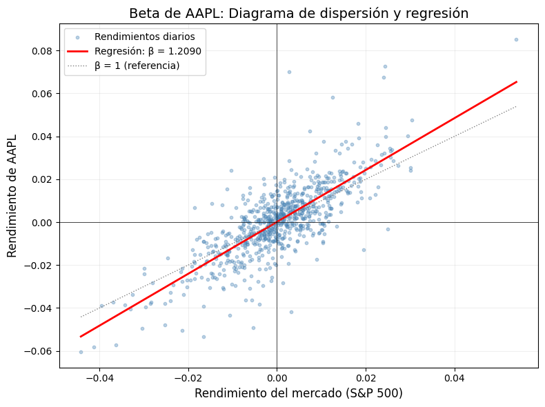
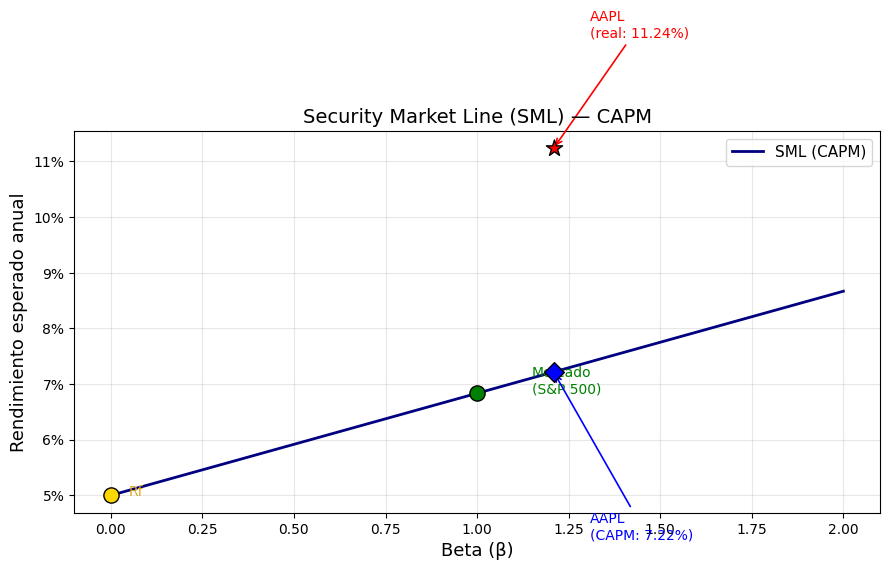

5. Riesgo diversificable vs No diversificable#
El riesgo total de un valor se divide en dos partes: el riesgo sistemático, denominado beta, que mide la variación del activo en relación con los movimientos del mercado, y el riesgo no sistemático, que es único para cada activo.
5.1. Riesgo diversificable#
El riesgo no sistemático, también denominado riesgo diversificable, no es compensado por el mercado. De hecho, se puede eliminar mediante la creación de carteras diversificadas. ver: efecto_diversificación
Beta (\(\beta\)) de un Activo Individual — Riesgo sistemático#
El beta (\(\beta\)) mide la sensibilidad del rendimiento de un activo frente al rendimiento del mercado. Es el indicador central de riesgo sistemático (no diversificable) dentro del modelo CAPM.
Donde:
\(R_i\): rendimiento del activo \(i\)
\(R_m\): rendimiento del mercado (benchmark)
Interpretación: | Valor de \(\beta\) | Significado | |—|—| | \(\beta = 1\) | El activo se mueve igual que el mercado | | \(\beta > 1\) | El activo es más volátil que el mercado (agresivo) | | \(\beta < 1\) | El activo es menos volátil que el mercado (defensivo) | | \(\beta < 0\) | El activo se mueve en dirección contraria al mercado |
En este cuaderno calcularemos el beta de Apple (AAPL) utilizando el S&P 500 (^GSPC) como benchmark, con datos reales de Yahoo Finance.
Paso 1 — Importar librerías y descargar datos#
Necesitamos:
yfinance para descargar precios históricos desde Yahoo Finance.
numpy y pandas para cálculos numéricos.
matplotlib para visualización.
[1]:
import numpy as np
import pandas as pd
import matplotlib.pyplot as plt
import yfinance as yf
# Configuración
ticker = "AAPL" # Acción a analizar
benchmark = "^GSPC" # S&P 500 como mercado
inicio = "2022-01-01"
fin = "2025-01-01"
# Descargar precios de cierre ajustados
datos = yf.download([ticker, benchmark], start=inicio, end=fin)["Close"]
datos.columns = [ticker, benchmark]
datos.head()
[*********************100%***********************] 2 of 2 completed
[1]:
| AAPL | ^GSPC | |
|---|---|---|
| Date | ||
| 2022-01-03 | 178.103653 | 4796.560059 |
| 2022-01-04 | 175.843231 | 4793.540039 |
| 2022-01-05 | 171.165848 | 4700.580078 |
| 2022-01-06 | 168.308502 | 4696.049805 |
| 2022-01-07 | 168.474854 | 4677.029785 |
Visualización de precios normalizados#
Para comparar el comportamiento de AAPL vs. el S&P 500, normalizamos ambos a base 100 (primer día = 100). Esto permite ver el desempeño relativo, ya que los precios absolutos tienen escalas muy diferentes.
[2]:
# Normalizar precios a base 100
precios_norm = datos / datos.iloc[0] * 100
fig, ax = plt.subplots(figsize=(10, 5))
precios_norm[ticker].plot(ax=ax, label=ticker, linewidth=2)
precios_norm[benchmark].plot(ax=ax, label="S&P 500", linewidth=2, linestyle="--")
ax.set_title("Evolución de precios normalizados (Base 100)", fontsize=14)
ax.set_ylabel("Precio normalizado")
ax.set_xlabel("")
ax.legend()
ax.grid(alpha=0.3)
plt.tight_layout()
plt.show()

Paso 2 — Calcular rendimientos logarítmicos#
Para calcular el beta necesitamos rendimientos, no precios. Usamos rendimientos logarítmicos (log-returns) porque:
Son aditivos en el tiempo (se pueden sumar para obtener rendimientos acumulados).
Tienen una distribución más cercana a la normal.
[3]:
# Calcular rendimientos logarítmicos diarios
rendimientos = np.log(datos / datos.shift(1)).dropna()
rendimientos.columns = [f"r_{ticker}", f"r_{benchmark}"]
print(f"Rendimientos diarios calculados: {len(rendimientos)} observaciones\n")
rendimientos.describe()
Rendimientos diarios calculados: 752 observaciones
[3]:
| r_AAPL | r_^GSPC | |
|---|---|---|
| count | 752.000000 | 752.000000 |
| mean | 0.000446 | 0.000271 |
| std | 0.017038 | 0.011032 |
| min | -0.060472 | -0.044199 |
| 25% | -0.008472 | -0.005801 |
| 50% | 0.001117 | 0.000250 |
| 75% | 0.009704 | 0.006706 |
| max | 0.085236 | 0.053953 |
Visualización de rendimientos#
Grafiquemos los rendimientos diarios de ambos para observar su co-movimiento.
[4]:
fig, axes = plt.subplots(2, 1, figsize=(10, 6), sharex=True)
rendimientos[f"r_{ticker}"].plot(ax=axes[0], color="steelblue", alpha=0.7)
axes[0].set_title(f"Rendimientos diarios de {ticker}", fontsize=12)
axes[0].set_ylabel("Rendimiento")
axes[0].axhline(0, color="black", linewidth=0.5)
axes[0].grid(alpha=0.3)
rendimientos[f"r_{benchmark}"].plot(ax=axes[1], color="coral", alpha=0.7)
axes[1].set_title("Rendimientos diarios del S&P 500", fontsize=12)
axes[1].set_ylabel("Rendimiento")
axes[1].axhline(0, color="black", linewidth=0.5)
axes[1].grid(alpha=0.3)
plt.tight_layout()
plt.show()

Paso 3 — Calcular la Covarianza y la Varianza#
El beta se calcula como:
Desglosemos cada componente:
Covarianza \(\text{Cov}(R_i, R_m)\): mide cómo se mueven juntos los rendimientos del activo y del mercado. Si es positiva, tienden a moverse en la misma dirección.
Varianza \(\text{Var}(R_m)\): mide la dispersión de los rendimientos del mercado. Es el «denominador normalizador».
[5]:
# --- Matriz de covarianza ---
matriz_cov = rendimientos.cov()
print("Matriz de Covarianza:")
print(matriz_cov)
print()
# Extraer la covarianza entre AAPL y el mercado
cov_activo_mercado = matriz_cov.iloc[0, 1]
print(f"Cov({ticker}, S&P 500) = {cov_activo_mercado:.8f}")
# Varianza del mercado
var_mercado = rendimientos[f"r_{benchmark}"].var()
print(f"Var(S&P 500) = {var_mercado:.8f}")
Matriz de Covarianza:
r_AAPL r_^GSPC
r_AAPL 0.000290 0.000147
r_^GSPC 0.000147 0.000122
Cov(AAPL, S&P 500) = 0.00014714
Var(S&P 500) = 0.00012171
Paso 4 — Calcular el Beta (Método 1: Fórmula directa)#
Aplicamos directamente la fórmula:
[6]:
# Método 1: Fórmula directa Cov(Ri, Rm) / Var(Rm)
beta_formula = cov_activo_mercado / var_mercado
print(f"Beta de {ticker} (fórmula directa):")
print(f" β = Cov / Var = {cov_activo_mercado:.8f} / {var_mercado:.8f}")
print(f" β = {beta_formula:.4f}")
Beta de AAPL (fórmula directa):
β = Cov / Var = 0.00014714 / 0.00012171
β = 1.2090
Paso 5 — Calcular el Beta (Método 2: Regresión Lineal por MCO)#
El beta también es la pendiente de la regresión lineal:
Donde:
\(\alpha\) (alfa o intercepto): rendimiento del activo no explicado por el mercado. Si \(\alpha > 0\), el activo genera valor por encima del mercado.
\(\beta\) (pendiente): sensibilidad al mercado = el beta que buscamos.
\(\varepsilon\): error aleatorio (riesgo idiosincrático).
Usamos numpy.polyfit para ajustar una recta.
[7]:
# Método 2: Regresión lineal Ri = alpha + beta * Rm
Rm = rendimientos[f"r_{benchmark}"].values
Ri = rendimientos[f"r_{ticker}"].values
# polyfit devuelve [pendiente, intercepto] para grado 1
beta_regresion, alpha_regresion = np.polyfit(Rm, Ri, deg=1)
print(f"Beta de {ticker} (regresión lineal):")
print(f" β (pendiente) = {beta_regresion:.4f}")
print(f" α (intercepto) = {alpha_regresion:.6f}")
print(f"\nEcuación estimada:")
print(f" R_AAPL = {alpha_regresion:.6f} + {beta_regresion:.4f} × R_mercado")
Beta de AAPL (regresión lineal):
β (pendiente) = 1.2090
α (intercepto) = 0.000118
Ecuación estimada:
R_AAPL = 0.000118 + 1.2090 × R_mercado
Paso 6 — Verificación: comparar ambos métodos#
Ambos métodos deben dar el mismo resultado, ya que la pendiente de la regresión MCO es algebraicamente equivalente a \(\frac{\text{Cov}(R_i, R_m)}{\text{Var}(R_m)}\).
[8]:
# Comparación de métodos
print("=" * 50)
print(f" RESUMEN: Beta de {ticker}")
print("=" * 50)
print(f" Método 1 (Cov/Var): β = {beta_formula:.4f}")
print(f" Método 2 (Regresión MCO): β = {beta_regresion:.4f}")
print("=" * 50)
print(f"\n ¿Son iguales? {'✓ Sí' if np.isclose(beta_formula, beta_regresion) else '✗ No'}")
==================================================
RESUMEN: Beta de AAPL
==================================================
Método 1 (Cov/Var): β = 1.2090
Método 2 (Regresión MCO): β = 1.2090
==================================================
¿Son iguales? ✓ Sí
Paso 7 — Gráfico: Diagrama de dispersión y recta de regresión#
Este gráfico es la representación visual del beta. Cada punto es un par \((R_m, R_i)\) de un día. La pendiente de la recta roja es el beta.
Si la nube de puntos sigue de cerca la recta → alta correlación con el mercado.
Si la pendiente es > 1 → el activo amplifica los movimientos del mercado.
[9]:
# Diagrama de dispersión + recta de regresión
fig, ax = plt.subplots(figsize=(8, 6))
# Nube de puntos
ax.scatter(Rm, Ri, alpha=0.35, s=10, color="steelblue", label="Rendimientos diarios")
# Recta de regresión: Ri = alpha + beta * Rm
x_linea = np.linspace(Rm.min(), Rm.max(), 100)
y_linea = alpha_regresion + beta_regresion * x_linea
ax.plot(x_linea, y_linea, color="red", linewidth=2,
label=f"Regresión: β = {beta_regresion:.4f}")
# Línea de referencia beta = 1 (si se moviera igual que el mercado)
ax.plot(x_linea, x_linea, color="gray", linewidth=1, linestyle=":",
label="β = 1 (referencia)")
ax.set_xlabel(f"Rendimiento del mercado (S&P 500)", fontsize=12)
ax.set_ylabel(f"Rendimiento de {ticker}", fontsize=12)
ax.set_title(f"Beta de {ticker}: Diagrama de dispersión y regresión", fontsize=14)
ax.legend(fontsize=10)
ax.axhline(0, color="black", linewidth=0.5)
ax.axvline(0, color="black", linewidth=0.5)
ax.grid(alpha=0.2)
plt.tight_layout()
plt.show()

Paso 8 — Métricas complementarias#
Calculemos métricas adicionales que complementan el análisis del beta:
Correlación (\(\rho\)): mide la fuerza de la relación lineal entre activo y mercado (entre -1 y 1).
R²: proporción de la varianza del activo explicada por el mercado. Un R² alto significa que el riesgo del activo es mayormente sistemático.
Volatilidades: desviación estándar anualizada de cada serie.
[10]:
# Correlación
correlacion = rendimientos[f"r_{ticker}"].corr(rendimientos[f"r_{benchmark}"])
# R² (coeficiente de determinación)
r_cuadrado = correlacion ** 2
# Volatilidades anualizadas (252 días de trading)
vol_activo = rendimientos[f"r_{ticker}"].std() * np.sqrt(252)
vol_mercado = rendimientos[f"r_{benchmark}"].std() * np.sqrt(252)
# Rendimiento medio anualizado
rend_activo = rendimientos[f"r_{ticker}"].mean() * 252
rend_mercado = rendimientos[f"r_{benchmark}"].mean() * 252
print("=" * 55)
print(f" ANÁLISIS COMPLETO: {ticker} vs S&P 500")
print("=" * 55)
print(f" Beta (β) = {beta_formula:.4f}")
print(f" Alfa (α) diario = {alpha_regresion:.6f}")
print(f" Correlación (ρ) = {correlacion:.4f}")
print(f" R² = {r_cuadrado:.4f} ({r_cuadrado*100:.1f}%)")
print("-" * 55)
print(f" Volatilidad {ticker:>5} = {vol_activo:.2%}")
print(f" Volatilidad S&P 500 = {vol_mercado:.2%}")
print(f" Rendimiento {ticker:>5} = {rend_activo:.2%}")
print(f" Rendimiento S&P 500 = {rend_mercado:.2%}")
print("=" * 55)
=======================================================
ANÁLISIS COMPLETO: AAPL vs S&P 500
=======================================================
Beta (β) = 1.2090
Alfa (α) diario = 0.000118
Correlación (ρ) = 0.7828
R² = 0.6128 (61.3%)
-------------------------------------------------------
Volatilidad AAPL = 27.05%
Volatilidad S&P 500 = 17.51%
Rendimiento AAPL = 11.24%
Rendimiento S&P 500 = 6.83%
=======================================================
Paso 9 — Rendimiento esperado según CAPM#
Con el beta calculado, podemos estimar el rendimiento esperado del activo según el modelo CAPM:
Donde \(R_f\) es la tasa libre de riesgo y \(E(R_m) - R_f\) es la prima de riesgo del mercado.
[11]:
# Tasa libre de riesgo (Treasury yield ~ 5% anual)
rf = 0.05
# Prima de riesgo del mercado
prima_mercado = rend_mercado - rf
# Rendimiento esperado CAPM
rend_capm = rf + beta_formula * prima_mercado
print(f"Tasa libre de riesgo (Rf) = {rf:.2%}")
print(f"Rendimiento mercado E(Rm) = {rend_mercado:.2%}")
print(f"Prima de riesgo (Rm - Rf) = {prima_mercado:.2%}")
print(f"Beta de {ticker} = {beta_formula:.4f}")
print()
print(f" E(R_{ticker}) = {rf:.2%} + {beta_formula:.4f} × {prima_mercado:.2%}")
print(f" E(R_{ticker}) = {rend_capm:.2%}")
print()
if rend_activo > rend_capm:
print(f" → {ticker} rindió {rend_activo:.2%} (histórico) vs {rend_capm:.2%} (CAPM)")
print(f" → El activo SUPERÓ lo que predice el CAPM (α positivo)")
else:
print(f" → {ticker} rindió {rend_activo:.2%} (histórico) vs {rend_capm:.2%} (CAPM)")
print(f" → El activo NO alcanzó lo que predice el CAPM (α negativo)")
Tasa libre de riesgo (Rf) = 5.00%
Rendimiento mercado E(Rm) = 6.83%
Prima de riesgo (Rm - Rf) = 1.83%
Beta de AAPL = 1.2090
E(R_AAPL) = 5.00% + 1.2090 × 1.83%
E(R_AAPL) = 7.22%
→ AAPL rindió 11.24% (histórico) vs 7.22% (CAPM)
→ El activo SUPERÓ lo que predice el CAPM (α positivo)
Paso 10 — Gráfico final: Security Market Line (SML)#
La Línea del Mercado de Valores (SML) muestra la relación riesgo-rendimiento según el CAPM. Todo activo eficiente debería ubicarse sobre esta línea.
Activos por encima de la SML → subvalorados (buen negocio).
Activos por debajo de la SML → sobrevalorados.
[12]:
# Security Market Line (SML)
fig, ax = plt.subplots(figsize=(9, 6))
# Línea SML: E(R) = Rf + beta * (Rm - Rf)
betas_linea = np.linspace(0, 2, 100)
sml = rf + betas_linea * prima_mercado
ax.plot(betas_linea, sml, color="navy", linewidth=2, label="SML (CAPM)")
# Punto del mercado (beta = 1)
ax.scatter(1, rend_mercado, color="green", s=120, zorder=5, edgecolors="black")
ax.annotate("Mercado\n(S&P 500)", xy=(1, rend_mercado),
xytext=(1.15, rend_mercado), fontsize=10, color="green")
# Punto del activo libre de riesgo (beta = 0)
ax.scatter(0, rf, color="gold", s=120, zorder=5, edgecolors="black")
ax.annotate("Rf", xy=(0, rf), xytext=(0.05, rf), fontsize=10, color="goldenrod")
# Punto del activo (rendimiento histórico real)
ax.scatter(beta_formula, rend_activo, color="red", s=150, zorder=5,
marker="*", edgecolors="black")
ax.annotate(f"{ticker}\n(real: {rend_activo:.2%})",
xy=(beta_formula, rend_activo),
xytext=(beta_formula + 0.1, rend_activo + 0.02),
fontsize=10, color="red",
arrowprops=dict(arrowstyle="->", color="red", lw=1.2))
# Punto del activo (rendimiento esperado CAPM)
ax.scatter(beta_formula, rend_capm, color="blue", s=100, zorder=5,
marker="D", edgecolors="black")
ax.annotate(f"{ticker}\n(CAPM: {rend_capm:.2%})",
xy=(beta_formula, rend_capm),
xytext=(beta_formula + 0.1, rend_capm - 0.03),
fontsize=10, color="blue",
arrowprops=dict(arrowstyle="->", color="blue", lw=1.2))
ax.set_xlabel("Beta (β)", fontsize=13)
ax.set_ylabel("Rendimiento esperado anual", fontsize=13)
ax.set_title("Security Market Line (SML) — CAPM", fontsize=14)
ax.legend(fontsize=11)
ax.grid(alpha=0.3)
ax.yaxis.set_major_formatter(plt.FuncFormatter(lambda x, _: f"{x:.0%}"))
plt.tight_layout()
plt.show()

Conclusiones#
Concepto |
Resultado |
|---|---|
Activo analizado |
AAPL (Apple Inc.) |
Benchmark |
S&P 500 (^GSPC) |
Período |
2022 – 2025 |
Beta calculado |
Se obtiene el mismo valor por ambos métodos |
Resumen del procedimiento:#
Descargar datos de precios de cierre de Yahoo Finance.
Calcular rendimientos logarítmicos diarios.
Obtener covarianza entre activo y mercado y varianza del mercado.
Aplicar la fórmula: \(\beta = \frac{\text{Cov}(R_i, R_m)}{\text{Var}(R_m)}\)
Verificar con regresión lineal (la pendiente = beta).
Interpretar: \(\beta > 1\) → activo agresivo; \(\beta < 1\) → activo defensivo.
Aplicar CAPM para estimar el rendimiento esperado: \(E(R_i) = R_f + \beta_i(E(R_m) - R_f)\).
Nota: El beta es una medida histórica basada en datos pasados. No garantiza el comportamiento futuro del activo, pero es una herramienta fundamental para la gestión de riesgo y la construcción de portafolios.